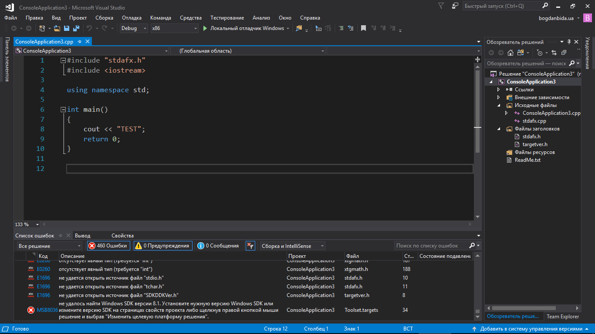
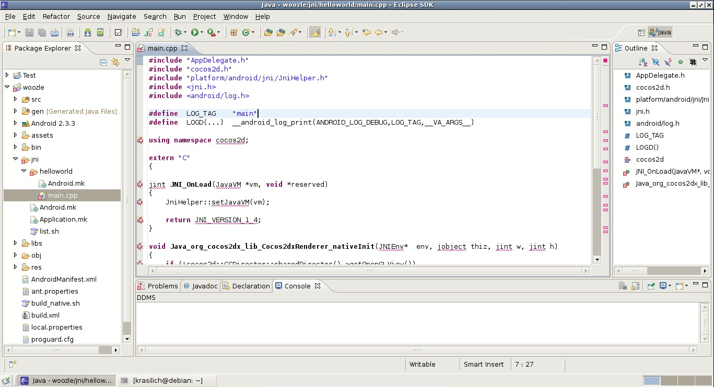
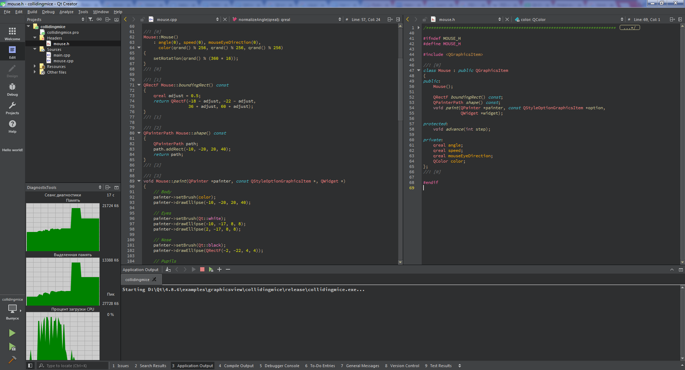
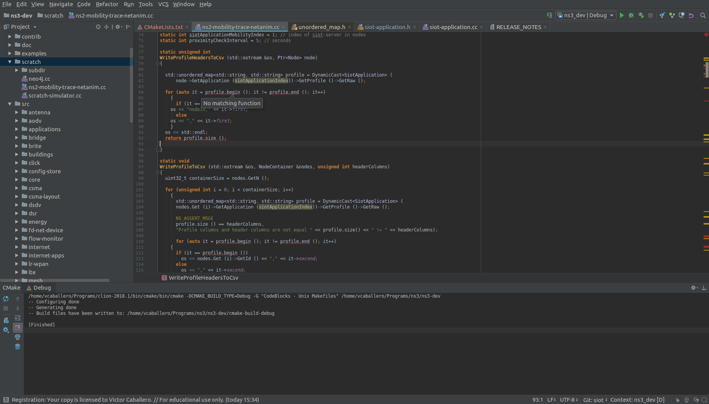
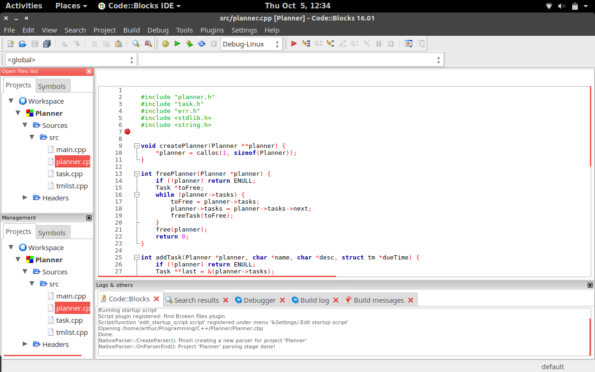

Урок 1: Выбор IDE (среды разработки)
Microsoft Visual Studio
Visual Studio — интегрированная среда разработки C++, которая позволяет разрабатывать как консольные приложения, так и приложения с графическим интерфейсом, в том числе с поддержкой технологии Windows Forms. Она также подходит для создания веб-сайтов, веб-приложений и веб-служб для всех поддерживаемых платформ: Windows, Windows Mobile, Windows CE, .NET Framework, Xbox, Windows Phone, .NET Compact Framework и Silverlight.
Eclipse CDT
Eclipse — свободная интегрированная среда разработки модульных кроссплатформенных приложений, которая приобрела большую популярность среди разработчиков на Java, однако в данной статье мы рассмотрим выпуск Eclipse CDT (С/С++ Development Tooling). Данная среда является отличным выбором, так как Eclipse CDT не только обладает всеми необходимыми инструментами, но и бесплатна и работает под различными операционными системами: Windows/Linux/macOS.
Qt Creator
Qt Creator — интегрированная среда разработки C++, доступная на Windows, Linux и macOS. Предоставляет бесплатную версию, которой можно пользоваться в течение 1 месяца. Предлагает полный набор инструментов разработчика, предназначенных для создания и развёртывания приложений.
CLion
CLion — кроссплатформенная среда программирования на C++ от компании JetBrains. Включает в себя современные стандарты C ++, libc ++ и Boost. Поддерживает также другие языки программирования — Kotlin, Python, Rust и т.д. — «из коробки» или с помощью плагинов.
Code::Blocks
Позволит писать не только на С/С++, но и обеспечит поддержкой таких языков программирования, как Fortran и D (с некоторыми ограничениями). У набора инструментов разработчика есть возможность для расширения за счёт установки плагинов. У этой среды программирования на C++ есть версии под Windows, macOS и Linux, однако существует возможность установить её на любую Unix-подобную систему при помощи сборки исходников.
Если у вас Windows, то мы рекомендуем выбрать visual studio community, т.к. она бесплатная для обучения, достаточно простая, мощная, пусть и тяжелая для компьютера. Для остальных ОС хорошей считается QR creator, однако он платный, поэтому можно выбрать и eclipse.